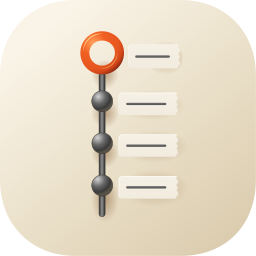

| Take | Hero at 1024, then renders at 128 / 64 / 48 / 32 / 16 css px (2× retina sources), plus the 16px squint magnified | Rubric | Verdict |
|---|---|---|---|
| master · icon.pngthe shipping file: the corpus-referenced raster take, masked with the set's squircle — SHIPS |  |
11 / 12 | Passes checks 1–4 on real renders: the set's squircle, a centred grid, a silhouette that names a timeline, and an open ember ring still legible at 16px. Richest material of the four: gel beads, a translucent ember torus with real bloom, porcelain cards with contact shadows. Loses one point on texture restraint: the generator gave each card a small tail notch that reads faintly as a speech bubble. |
| engineC-66454c-masked · icon-engineC-66454c-masked.pngGPT Image 2.6 Sunburst raster, referenced on apple-05, apple-18 and the Engine A render |      |
11 / 12 | The same pixels as the shipping file before export; kept so the sheet shows the take it came from. Cropped 18px each side before masking, because the generator drew its own inset tile and a grey margin outside it. |
| engineA-hand · icon-engineA-hand.svghand-authored layered SVG (build_icon.py), the editable master | 10 / 12 | Clears the bar on composition, grid and 16px survival, and is the only take with geometry as named constants. Loses on material against the raster: the ring is a gradient stroke rather than a translucent torus, and the beads read as flat discs at 64px. The owner chose the raster to ship; this stays as icon.svg for later edits. | |
| engineB-9a0aa0 · icon-engineB-9a0aa0.svgArrow 2 vector take |  |
8 / 12 | Below the bar. The ground runs yellow rather than the family's porcelain, the cards are flat plates with no edge or shadow, and the rail floats with no contact shadow, so palette discipline, depth coherence and era fit all fail. Its centred composition was considered and not salvaged: it leaves the right half of the tile empty at 128px. |